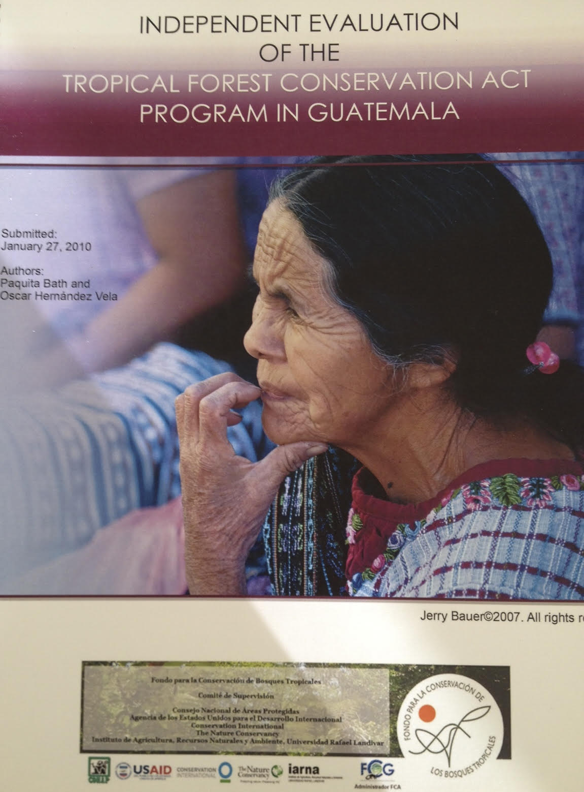

Aligning Visions publications are generally "how-to" manuals full of practical tools for conservation nonprofits. It is a pleasure and great privilege to work on new materials with different clients and keep improving and evolving core ideas that repeatedly surface over the years. In some cases, clients ask for program assessments, papers or publications that are, by their nature, confidential. However, frequently while developing materials for a client, we find useful fodder for other organizations as well. These publications, are not peer-reviewed in the scientific publication sense, but are constantly being tested, and frankly, are always works in progress.
In 2020, I am partnering with Wolf’s Company to work with the Conservation Finance Alliance and many expert members of their Conservation Trust Fund Taskforce to develop a Ten-Year Review of Conservation Trust Funds (2010-2020) and update the Practice Standards for Conservation Trust Funds.
A partial list of publicly available publications follows. I hope some of the ideas will be helpful to you. Thanks to the clients who encourage this work!
- Governance in Regional Conservation Finance Platforms: A Comparative Case Study — Caribbean- Pacific Environmental Fund Alliance;
- Resource Manual for Impactful Conservation Project Design — MAR Leadership, FMCN;
- Chapter Fundraising: A How-to-Guide — Audubon California;
- Conservation Partnership Resource Center — The Nature Conservancy;
- Participatory Strategic Planning: A How-To Guide for Nonprofits;
- Meaningful Nonprofit Boards: A How-To Guide;
- Fundraising Strategies for Environmental Funds — RedLAC and CAFÉ;
- Environmental Funds Tool Kit — Conservation Finance Alliance;
- Hiring and Retention Guides — The Nature Conservancy;
- Rumbo al éxito on board development — Co-author, The Nature Conservancy;
- Resources for Success — Editor, The Nature Conservancy; and
- Evaluación ecológica rápida (Rapid Ecological Assessment) — Co-author, The Nature Conservancy